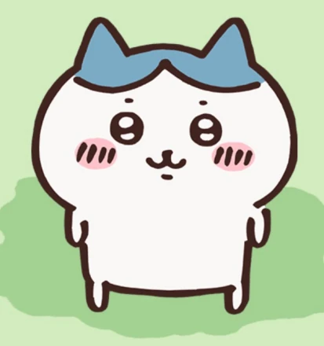
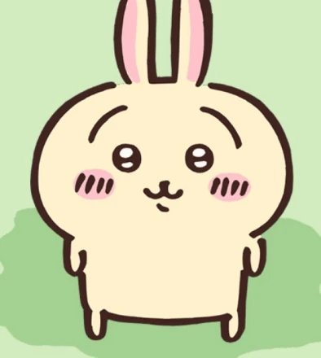
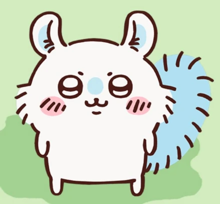
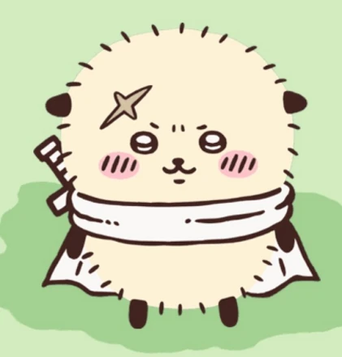
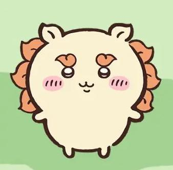
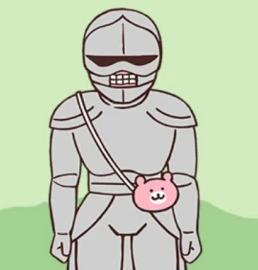
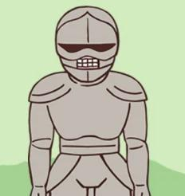
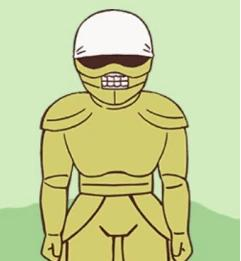
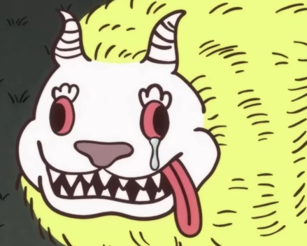
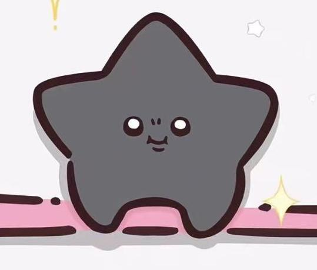

角色介绍
点击头像，聆听他们的声音吧！
本作主角，生日为2017年5月1日。 台词基本上由简单的音节构成。虽然爱哭但在关键的时刻非常勇敢坚强，运气很好，现在住在抽奖中的白色房子里，武器是粉色的刺叉。 非常喜欢自己的好朋友小八和乌萨奇。 现在在为了除草5级努力学习中。

主角团之一，吉伊和乌萨奇的好朋友。生日为2020年5月1日。 主角团中唯一能完整使用人类语言说话的存在。好奇心旺盛的乐天派，偶尔会露出天然的一面，住在山洞里，武器是蓝色的刺叉。 吉他弹唱了动画的片尾曲《自言自语》。 除草5级

主角团之一，吉伊和哈奇的好朋友。生日为2019年1月22日。 台词常为“呀哈”“呜啦”等怪声。直觉敏锐，自由奔放又神秘的存在。住所至今是谜，武器是两端能发射火药的棍子。初次登场是在同作者的另一部漫画中。除草3级。

总是在装可爱，同时行为却非常原始粗暴。经常给劳动铠添麻烦。出场时从大强那里夺走了什么东西而被追赶，仔细看的话会发现原来是……？由于名字里带上了桃字（もも）也被称为桃鼠。
台词几乎只有“哈——”。看起来很可爱，行为却很大叔，出场时总是在喝酒（动画更改为饮料）和享用美食。另一方面也很会照顾人，经常把自己吃的美食分给吉伊它们吃。

讨伐排名第一，吉伊和哈奇憧憬的存在。对朋友十分仗义。台词很少，基本使用行动和拟声词的表达。是小可爱们的崇拜对象。冷酷的外表下藏着一颗喜爱甜食的心，每次吃甜品都会露出超可爱的表情。

拉面店“郎”的助手。会叫拉面铠“师父”。

喜欢可爱的东西，会自己制作小挎包和睡衣来售卖。对主角三只十分亲切，关系很好。

在劳动窗口发放工作的铠甲。和手工铠关系很好。面对胡搅蛮缠的飞鼠，会一边说着麻烦一边照顾它。与主角三只是朋友。

拉面店“郎”的店主。

长相凶猛，出场时恶狠狠地追赶飞鼠想要夺回自己的东西，但在夜晚曾对着流星许愿并独自流泪。它的愿望是……？

可以逆转时间。据说向它许愿，愿望就一定会实现。